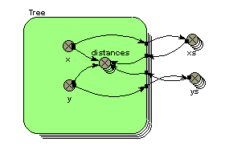

hypot function
hypot(X,Y)
Returns
length of hypotenuse of right-angle triangle with base X and height Y
Inputs: numeric,
numeric
Result: numeric
Examples:
hypot(3,4)
--> 5 (a 3:4:5 triangle)
hypot(x1-x2,y1-y2) --> the distance between two points with co-ordinates
(x1,y1) and (x2,y2) respectively.
hypot(x-[xs],y-[ys]) --> [distances]
I.e. an array containing the distance from one point with co-ordinates
(x,y) to a set of points, with co-ordinates held in the arrays [xs] and [ys]. See comments.
Comments
Spatial
modelling frequently requires that one object knows the distance to
another. This requires that each has
x,y co-ordinates. It is then simple to
use the hypot function to work out the straight-line distance between them, as
shown in the second example above.
The same
principle applies when you use a multiple-instance submodel to represent a set
of spatially-located objects. In this
case, each object may want to know how far it is to all the other objects - for
example, in working out the competition between trees in an individual-based
tree model. The following model diagram
fragment shows a typical model configuration for doing this:

Each tree
has x,y co-ordinates. These are exported
to two array variables, xs and ys, whose equations are simply:
xs = [x]
and
ys = [ys]
These arrays are then brought back into the submodel, and used to generate an
array containing the distance for each tree to all the other trees, using the
equation given in the third example above.
In: Contents >> Working with equations >> Functions >> Built-in functions